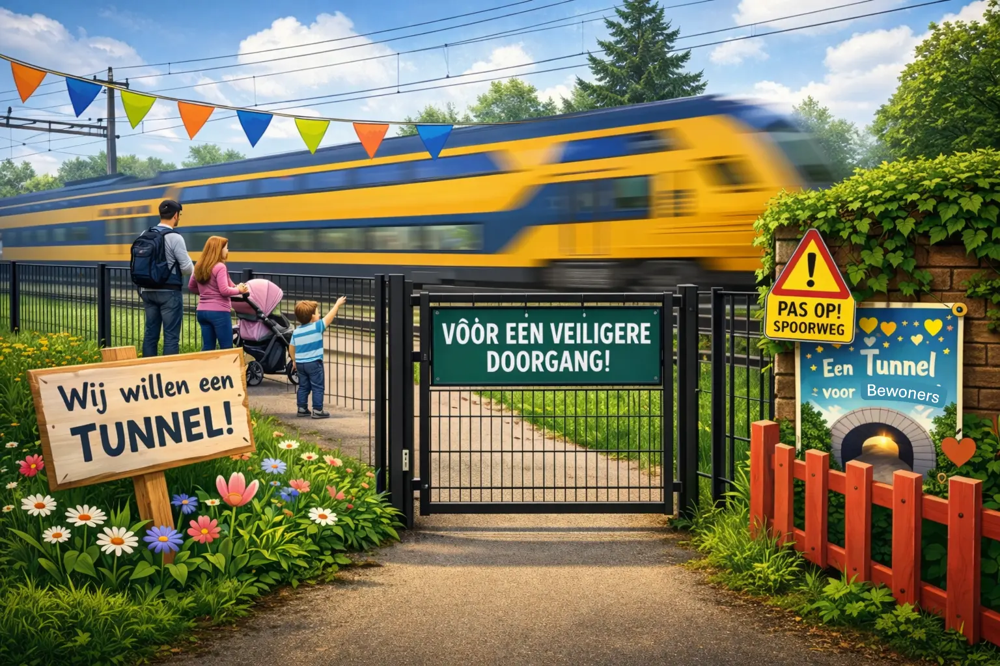

Doel van het Burgerinitiatief
(Volgende sectie — de uitgebreide intro- en partij-teksten uit de huidige hero verhuizen naar hier en naar #verkiezingen.)
Sinds de spoorwegovergang in 2024 dichtging, is er geen veilige, directe route meer van de Leidsevaart naar Buitenplaats Leyduin. Een eenvoudige voetgangerstunnel (met fietsgoot) onder het spoor brengt het gezonde “ommetje” terug.
